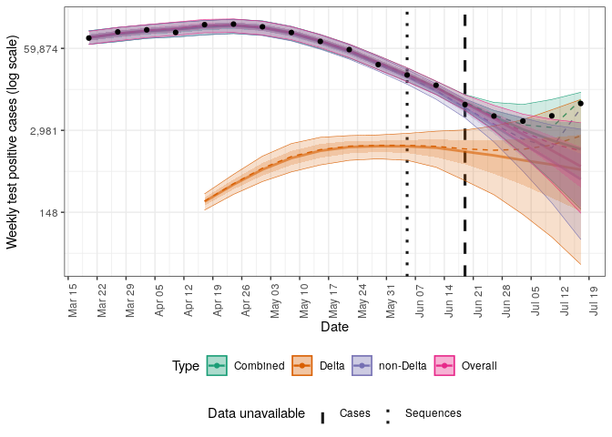
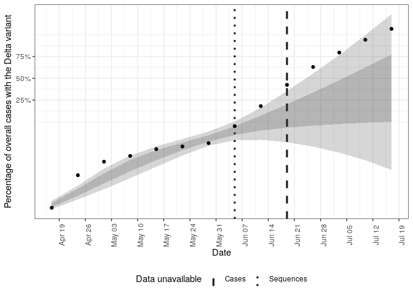
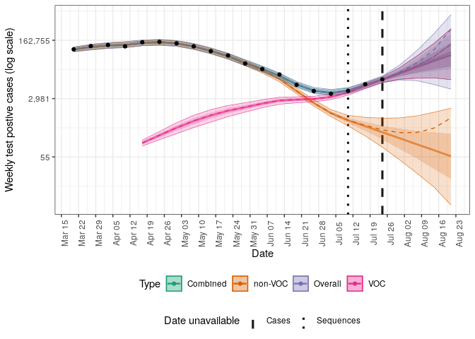
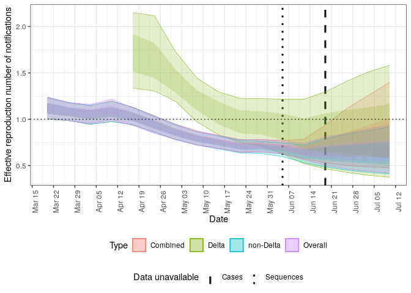

Forecast case and sequence notifications using variant of concern strain dynamics


Contains models and tools to produce short-term forecasts for both case and sequence notifications assuming circulation of either one or two variants. Tools are also provided to allow the evaluation of the use of sequence data for short-term forecasts in both real-world settings and in user generated scenarios.
Installation
Installing the package
Install the stable development version of the package with:
install.packages("forecast.vocs", repos = "https://epiforecasts.r-universe.dev")Install the unstable development from GitHub using the following,
remotes::install_github("epiforecasts/forecast.vocs", dependencies = TRUE)Installing CmdStan
If you don’t already have CmdStan installed then, in addition to installing forecast.vocs, it is also necessary to install CmdStan using CmdStanR’s install_cmdstan() function to enable model fitting in forecast.vocs. A suitable C++ toolchain is also required. Instructions are provided in the Getting started with CmdStanR vignette. See the CmdStanR documentation for further details and support.
cmdstanr::install_cmdstan()Quick start
This quick start uses data from Germany that includes COVID-19 notificatons and sequences with sequences either being positive or negative for the Delta variant. It shows how to produce forecasts for both a one and two strain model for the 19th of June 2021 when the latest available data estimated that approximately 7% of COVID-19 were positive for the Delta variant. Note that estimated growth rates and reproduction numbers shown here have been rescaled using an assumed generation time of 5.5 days and a weakly informative prior centred around Delta being 40% more transmissible than non-Delta cases has been used.
library(forecast.vocs)
options(mc.cores = 4)
obs <- filter_by_availability(
germany_covid19_delta_obs,
date = as.Date("2021-06-19")
)
current_obs <- latest_obs(germany_covid19_delta_obs)Forecast all-in-one
Run a forecast for both one and two strain models (or optionally just one of these) using the forecast() function. This provides a wrapper around other package tooling to initialise, fit, and summarise forecasts. Multiple forecasts can be performed efficiently across dates and scenarios using forecast_across_dates() and forecast_across_scenarios().
forecasts <- forecast(obs,
strains = c(1, 2), voc_scale = c(0.4, 0.2),
voc_label = "Delta", scale_r = 5.5 / 7,
adapt_delta = 0.99, max_treedepth = 15,
refresh = 0, show_messages = FALSE,
)
#> Running MCMC with 4 parallel chains...
#>
#> Chain 3 finished in 11.3 seconds.
#> Chain 2 finished in 12.0 seconds.
#> Chain 4 finished in 13.6 seconds.
#> Chain 1 finished in 32.6 seconds.
#>
#> All 4 chains finished successfully.
#> Mean chain execution time: 17.4 seconds.
#> Total execution time: 32.7 seconds.
#> Running MCMC with 4 parallel chains...
#>
#> Chain 4 finished in 34.3 seconds.
#> Chain 2 finished in 38.3 seconds.
#> Chain 3 finished in 39.0 seconds.
#> Chain 1 finished in 41.6 seconds.
#>
#> All 4 chains finished successfully.
#> Mean chain execution time: 38.3 seconds.
#> Total execution time: 41.7 seconds.
forecasts
#> id forecast_date strains overdispersion variant_relationship r_init
#> 1: 0 2021-06-19 1 TRUE pooled 0,0.25
#> 2: 0 2021-06-19 2 TRUE pooled 0,0.25
#> voc_scale error fit data fit_args samples max_rhat
#> 1: 0.4,0.2 <CmdStanMCMC[30]> <list[20]> <list[5]> 4000 1.002723
#> 2: 0.4,0.2 <CmdStanMCMC[30]> <list[20]> <list[5]> 4000 1.005589
#> divergent_transitions per_divergent_transitons max_treedepth
#> 1: 10 0.00250 12
#> 2: 13 0.00325 10
#> no_at_max_treedepth per_at_max_treedepth posterior
#> 1: 504 0.1260 <data.table[148x20]>
#> 2: 2998 0.7495 <data.table[400x20]>
#> forecast
#> 1: <data.table[12x13]>
#> 2: <data.table[54x13]>Unnest posterior estimates from each model.
posteriors <- unnest_posterior(forecasts)Plot the posterior prediction for cases from the single strain model (“Overall”), from the two strain model (“Combined”), and the unobserved estimates for each strain.
plot_cases(posteriors, current_obs)
Plot the posterior prediction for the fraction of cases that have the Delta variant from the two strain model.
plot_voc(posteriors, current_obs, voc_label = "Delta variant")
Plot the posterior estimate for the growth rate over the mean of the generation time for COVID-19 cases (here assumed to be 5.5 days).
plot_growth(posteriors)
Plot the posterior estimate for the effective reproduction number of Delta and non-Delta cases.
plot_rt(posteriors)
Alternatively a list of plots with sensible defaults can be produced using the following.
plot_posterior(
posteriors, current_obs,
voc_label = "Delta variant"
)Step by step forecast
Rather than using the all-in-one forecast() function individual package functions can be used to produce a forecast as follows.
dt <- stan_data(obs, horizon = 4)
model <- load_model(strains = 2)
inits <- stan_inits(dt, strains = 2)
fit <- stan_fit(
data = dt, model = model, init = inits,
voc_scale = c(0.4, 0.2),
adapt_delta = 0.99, max_treedepth = 15,
refresh = 0, show_messages = FALSE
)
posterior <- summarise_posterior(fit, voc_label = "Delta", scale_r = 5.5 / 7)As for forecasts produced with the forecast() function summary plots and estimates can then be produced using package functions.
Citation
If using forecast.vocs in your work please consider citing it using the following,
#>
#> To cite forecast.vocs in publications use:
#>
#> Sam Abbott (2021). forecast.vocs: Forecast case and sequence
#> notifications using variant of concern strain dynamics, DOI:
#> 10.5281/zenodo.5559016
#>
#> A BibTeX entry for LaTeX users is
#>
#> @Article{,
#> title = {forecast.vocs: Forecast case and sequence notifications using variant of concern strain dynamics},
#> author = {Sam Abbott},
#> journal = {Zenodo},
#> year = {2021},
#> doi = {10.5281/zenodo.5559016},
#> }How to make a bug report or feature request
Please briefly describe your problem and what output you expect in an issue. If you have a question, please don’t open an issue. Instead, ask on our Q and A page.
Contributing
We welcome contributions and new contributors! We particularly appreciate help on priority problems in the issues. Please check and add to the issues, and/or add a pull request.
Code of Conduct
Please note that the forecast.vocs project is released with a Contributor Code of Conduct. By contributing to this project, you agree to abide by its terms.